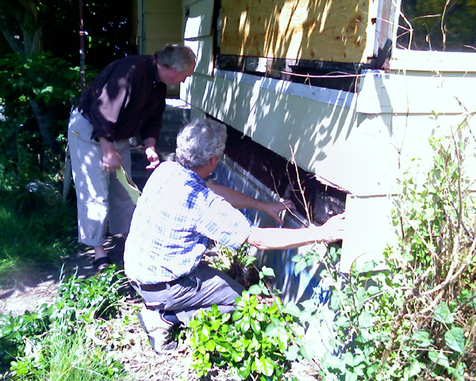

Our landscape architects John Barker and Page Crutcher, along with our Seattle Parks and Recreation Project Manager Pamela Kliment and myself met with the Seattle Department of Transportation (SDOT) yesterday. SDOT employees Mike Hendrix (civil engineer) and Jennifer Britton (landscape architect) were very gracious and gave us information about how to proceed with the development of the raingarden in the right of way. They liked our project and were supportive.
They mentioned that we will need the approval of some percentage of the neighbors to remove parking for the raingardens. They will get us the information about what percentage and which neighbors will need to sign off on the loss of parking for the gain of an environmentally sustainable park feature. My thinking is that the neighbors (thus far) have been enthusiastic about the raingardens and that if we are to become more environmentally conscious, that trading the loss of perhaps four parking spots for the raingardens is a natural choice.
Mike and Jennifer were concerned about maintenance of the plantings in the raingardens. They said that SDOT crews are as stretched as Parks crews and that a “sanctioned entity” (definition not fully understood) would have to step up and sign on for maintenance. I mentioned that we have already signed on to be a “Friends of…” entity with Parks, with steering committee member Gabriella Moller as our fearless and enthusiastic leader. (more…)
Posted on June 29th 2007 by David Folweiler in Meetings | Comments Off on Meeting with SDOT |
Rebecca told me late last week that we have been awarded $3000 from the Seattle Foundation! Thanks to the Seattle Foundation for their support!
Posted on June 25th 2007 by David Folweiler in Fundraising | Comments Off on $3000 from the Seattle Foundation |
This morning, Rebecca Carr and I met with Ken Pritchard to answer questions about our grant application to King County for the raingarden. I think we did a decent job of showing off the park site and answering their questions. We’ve applied for $43,000 from the Waterworks Grant, half of the amount needed to construct the raingarden.
Posted on June 25th 2007 by David Folweiler in Fundraising,Meetings | Comments Off on Meeting with Ken Pritchard |
Remember to:
- shop at Ballard Market
- save your receipts
- give the receipts to David
- the park gets 1% of your spend!
Public service announcement, over.
Posted on June 13th 2007 by gordon in Misc. | Comments Off on Shop Local! |
A small update of the site tonight to bring our fundraising page up to date with the news of our $75,000 grant.
Although the plan was to update the financials quarterly this was too good to pass up.
The thermometers have been updated on the main fundraising page, and at the top of this page.
I have also taken the opportunity to add in a new banner for the site provided by Barker Landscapes that is in Ye Olde Ballard Tile style.
Posted on June 6th 2007 by gordon in Fundraising | Comments Off on Fundraising Update |
We met yesterday at the park site to plan for the deconstruction or demolition. In attendance were myself, John Barker (our landscape architect), Mohan Khandekar (architect for the Parks Department), Lise Ward (Parks Department property manager), Gary Gibbons (Seattle Conservation Corps), and Davidya Kasperzyk (steering committee member).

Davidya and John begin the deconstruction by tearing off the lowest course of plywood siding. They were looking the see how high the sill was above grade.
We’ve been trying to involve Re-Store or another architectural salvage company in the demolition/deconstruction of the house. I am using both terms because they are very different techniques. Demolition involves heavy machinery, big dumpsters, and landfilled materials. Deconstruction means the careful removal of salvageable materials. Deconstruction takes longer and is more expensive. Gary Gibbons is working with SPU, who may grant money to cover the difference in costs.
We don’t know yet whether the house will be deconstructed or demolished. Stay tuned!
Posted on June 1st 2007 by David Folweiler in Misc. | Comments Off on Deconstruction vs. Demolition |
Rebecca just received word from Garry Owens at the Department of Neighborhoods that Ballard Corners Park was awarded $75,000 as part of the Large Projects Fund! That puts our fundraising total at $372,000, some 85% of our goal of $440,000. We still need more funds to begin construction. Your contribution is needed!
Posted on June 1st 2007 by David Folweiler in Misc. | Comments Off on $75,000 from the Department of Neighborhoods! |
State Funding
Our state funding of $125,000 is now secure. Governor Gregoire signed the capital budget bill, vetoing a few sections, but leaving our funding intact. More information is here.
Department of Neighborhoods Large Project Grant
Our co-chair Rebecca and I attended the Ballard District Council meeting on 9 May 07. I gave a short presentation, and then Jennifer Macuiba presented a subcommittee’s report on their score of our project. They gave us 96 out of 100 possible points! They are 50% of the weight of our scoring.
The other 50% comes from the Citywide Review Team (CRT). Jody, Mark, Gabriella, Susan, Rebecca, and I attended their meeting on 16 May 07 at McClure Middle School. We answered questions from their reviewers, gave them a fundraising update, and I gave a short presentation. We won’t know their score or recommendations for a little while. We did find out that there were funding requests totaling $1.8 million for a pot of $1.3 million. I think we have a very good chance of getting our full request – $100,000.
With the $100,000 we hope to receive from the large project grant, we will have close to $400,000 in funds. The project costs are estimated to be approximately $440,000 currently. Rebecca is working on several other grant proposals for the remainder and we are asking neighbors to contribute toward making this park a reality. We are getting closer all the time to raising the money needed, but more is needed. See this page for the details.
Landscape Design
We are working with Pam Kliment, our project manager at the Parks Department and John Barker, our landscape architect, to get a contract in place for the remainder of the design work and construction oversight. One of the largest elements of the process will be the civil engineering documents and permits for the raingardens. The civil engineering will cost us $21,500 and the permit from SDOT will be $6500. Ouch! It apparently costs lots of money to change the right of way, even a little bit of it.
Posted on May 19th 2007 by David Folweiler in Fundraising,Meetings | Comments Off on Fundraising and Landscape Design Update |
John Barker and I talked yesterday about the park design. I commented that our raingardens will only soak up a little bit of the stormwater in our neighborhood, lamenting at not being able to affect a larger area, as they do in the SEA streets (online tour here and homepage for the SEA streets). For those who haven’t been there, I recommend a tour. I think they’re beautiful. The SEA streets are along 2nd Ave NW, between 117th and 120th, just across 3rd Ave NW from Viewlands Elementary School.
 (more…)
(more…)
Posted on May 19th 2007 by David Folweiler in Misc. | Comments Off on What could 17 Ave NW look like? |
Last night, we gave a short presentation to the Ballard District Council. Afterwards, a subcommittee headed by Jennifer Macuiba presented their review of Rebecca’s Department of Neighborhoods Large Project Fund Grant Application. Jennifer said they rated us in many different categories and gave us an overall score of 96 out of a possible 100 points.
Posted on May 14th 2007 by David Folweiler in Fundraising,Meetings | Comments Off on We got an ‘A’ |
« Previous Page • Next Page »